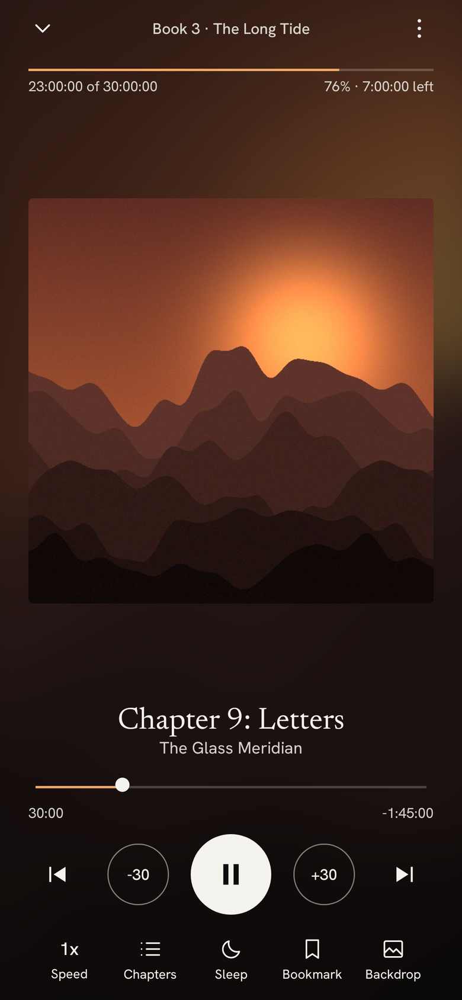
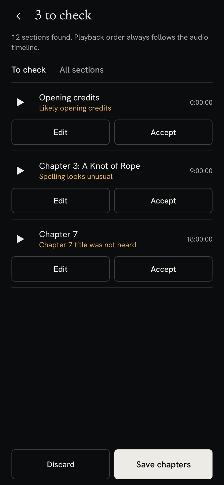
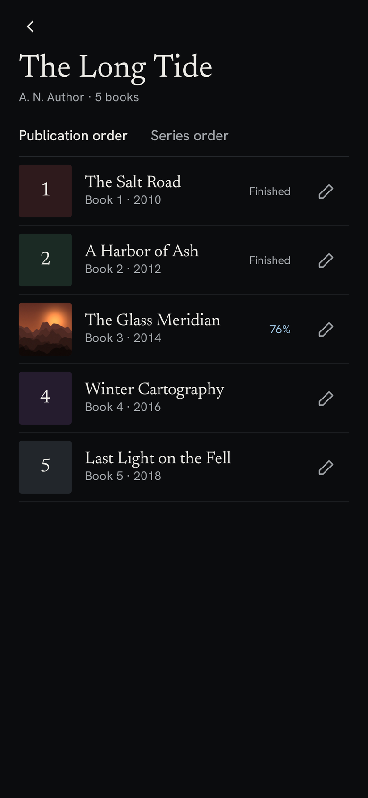

A free, private player for your own DRM-free audiobooks. It keeps long series together, remembers your place in every book, and can find missing chapters by listening.
Download for Android Early release. About 63 MB, for 64-bit Android 8.0 or later.
The analyzer looks for longer pauses, transcribes the moments after them, and suggests titles like Prologue, Chapter 12, or Epilogue. It flags anything uncertain, so you check a handful of sections instead of the whole book.
Playback order comes from the audio timeline, so a wrong label can never reshuffle your book.


Books are grouped together and can be sorted by publication order or series order, with a place for prequels. Every book keeps its own position, so you can listen to several at once.
Rename chapters, move their start times, or merge and delete them. Your audio file is never changed, and the originals are one tap away.
Choose your own art for a book or a whole series. The player can use it as a blurred background, take a color from it, or stay black.
The app doesn't request internet access. Your files, transcripts, and edits stay on your device.
Your position saves every few seconds. If you skip by accident, Jump back returns you to where you were.
M4B, M4A, MP4, AAC, MP3, FLAC, Ogg, Opus, and WAV, as one file or a folder of files.
Speed control, sleep timer, bookmarks, and a one-color icon for home screens that use themed icons.
No. It's free and open source, with no account or subscription.
It plays DRM-free files only. Protected files such as AA and AAX are skipped, and Colophon doesn't try to get around that protection.
It works best with clear narration and spoken headings. It only understands English for now, and it can mishear unusual names, which is why there is a review step. Long books can take a while, so it can wait until your phone is charging.
Your audio files stay where they are. Positions, bookmarks, and chapter edits are stored inside the app and may be lost unless Android's device backup restores them.